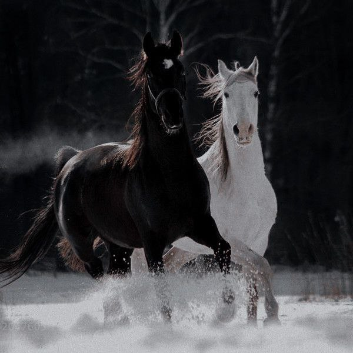
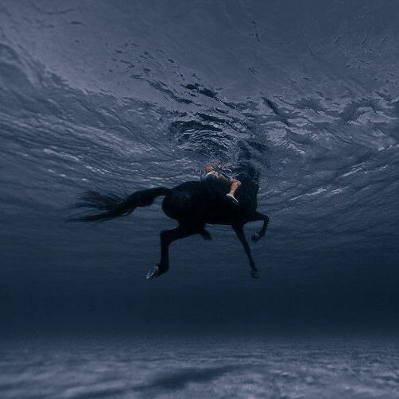
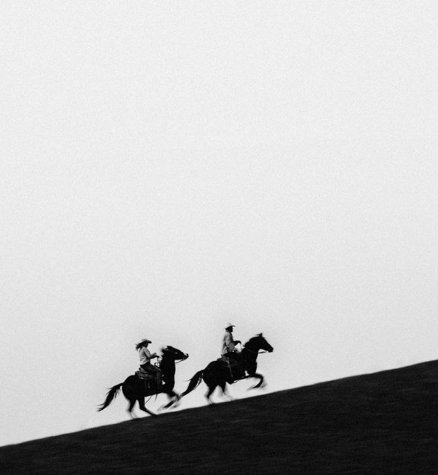

Horses are herbivores that are characterized by a muscular body, a solid torso, a long, thick neck, a large, elongated head, and teeth designed for grazing, in addition to a long tail, and long, slender legs that end in oval-shaped hooves. Their body is also covered with short hair, along with a mane (in English : mane) which is considered coarse hair extending along the dorsal area of the neck, as it is long in domesticated horses, and short in wild horses, and sometimes a strip of dark hair extends along the middle of the back from the crest to the tail, especially in wild species, as for modern horses. Birth is characterized by curly hair and a softer mane than that of an adult horse.

Horses have a natural instinct for swimming, with their massive lungs acting as natural flotation devices, yet their abilities vary from one horse to another.

The average speed at which a horse runs is approximately 48.2 kilometers per hour, but its maximum speed can reach much higher than that. According to the Guinness Book of World Records for the year 2008, the horse Winning Bro was able to cover a distance of 70.76 kilometers per hour, thus obtaining the title The fastest horse in the world.